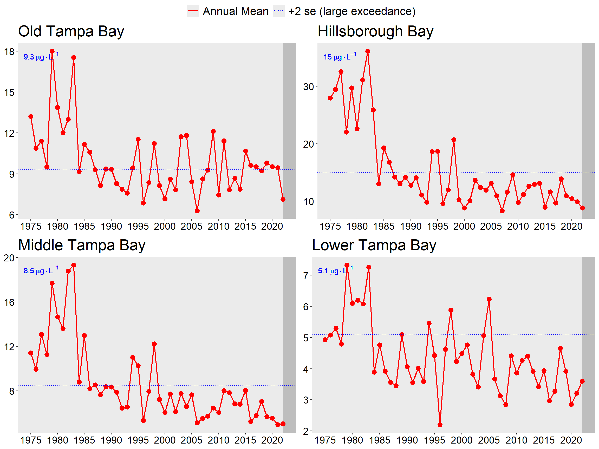
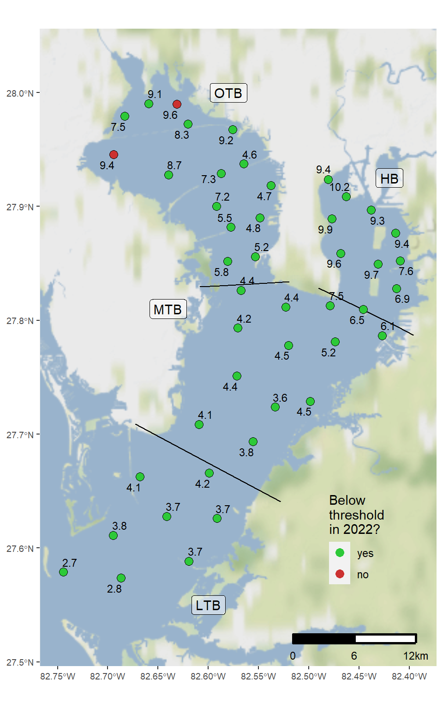
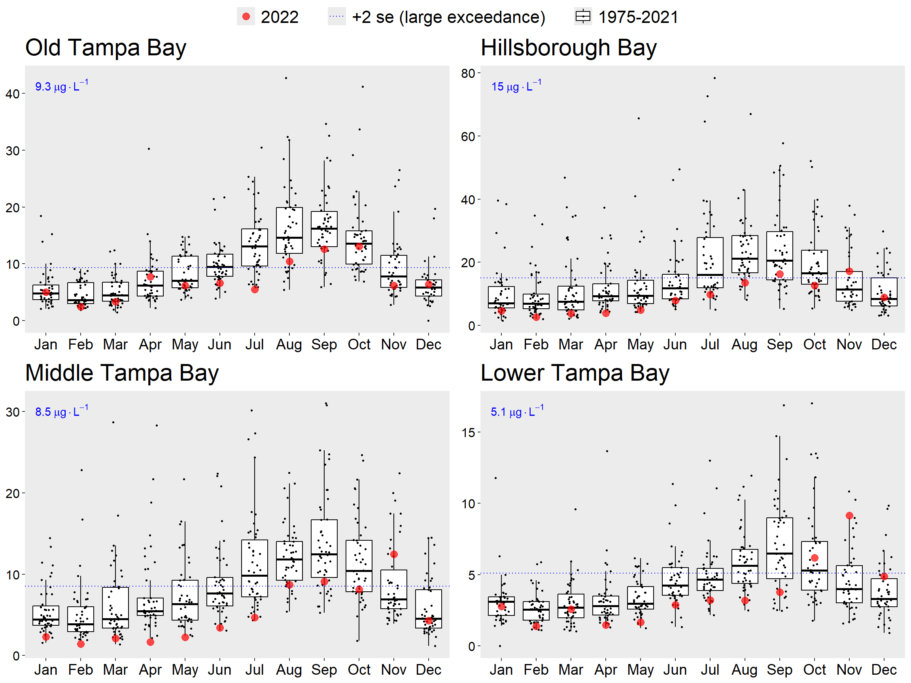
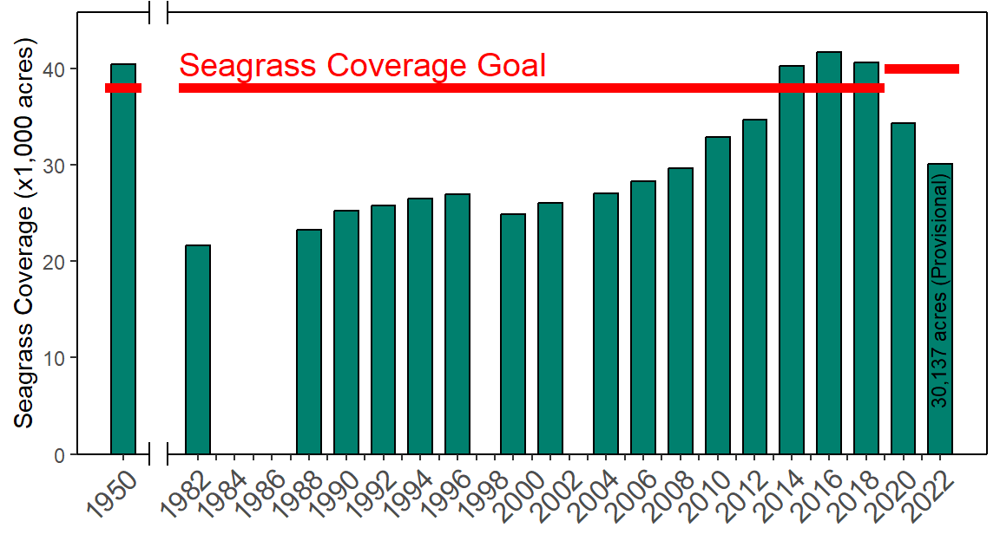

3 2022 Results Summary
Results from 2022 indicate that all RA bay segments met chlorophyll-a thresholds accepted by the FDEP to maintain FDEP Reasonable Assurance for Tampa Bay and to comply with the EPA TMDL (Figure 3.1) and estuarine numeric nutrient criteria for Tampa Bay (EPA Amended Approval Letter Jun. 28, 2013). During the previous RA period (2017-2021), Old Tampa Bay exceeded the chlorophyll-a threshold for four of the five years. While the chlorophyll-a threshold was met in Old Tampa Bay for the 2022 annual assessment period, water quality conditions in this bay segment remain a priority concern for the Consortium. Chlorophyll-a concentrations are typically elevated in a poorly flushed region that has produced summertime blooms of Pyrodinium bahamense since 2009 (Figure 3.2); Note that individual station exceedences are not considered in this RA compliance assessment). This observation is reflected in the majority of summertime months with chlorophyll-a concentrations higher than long-term median values in Old Tampa Bay, although this was not observed in 2022 (Figure 3.3). To address these water quality problems, the Consortium formed an Old Tampa Bay Working Group in early 2020 to prioritize additional investigations and future management actions that may alleviate the conditions fostering these summertime blooms. Additionally, the TBEP received funding from a NOAA Restore Actionable Science grant in 2021 to develop a research management plan for identifying potential actions to improve water quality conditions in Old Tampa Bay. The plan will be finalized in early 2023, and a grant proposal was submitted to NOAA for the next research phases outlined in the plan.
The TBEP, in partnership with the Southwest Florida Water Management District, has previously developed an integrated ecosystem model to evaluate the net environmental benefits that may result from implementing various management actions in Old Tampa Bay including: reducing point sources, nonpoint sources, and causeway obstructions in Old Tampa Bay (E. Sherwood, H. Greening, L. Garcia, K. Kaufman, T. Janicki, R. Pribble, B. Cunningham, S. Peene, J. Fitzpatrick, K. Dixon, M. Wessel 2015). Management actions that proximate and respond to current Old Tampa Bay conditions will be further evaluated using this model. Furthermore, the TBEP is funding research conducted by the Florida Fish and Wildlife Research Institute to improve understanding of the cell physiology and behavior of Pyrodinium bahamense and evaluate the potential for using shellfish to mitigate these algal blooms in Old Tampa Bay. A water quality dashboard (https://shiny.tbep.org/wq-dash) continues to be available to further synthesize available data, assess additional water quality metrics (phytoplankton counts), and inform Consortium participants and other resource managers on the status of water quality in Tampa Bay. The dashboard allows for proactive response to anomalous water quality conditions on a month-to-month basis by the community.
Seagrasses were relatively stable in much of Lower to Middle Tampa Bay; however, additional declines to the ephemeral seagrass beds in upper Tampa Bay were observed between 2020 and 2022. Aerial photographs taken in December 2021 - January 2022 indicated that baywide seagrass coverage decreased by 4,160 acres, marking the third consecutive biennial reporting period with seagrass declines. Seagrass acreage showed the greatest decreases in Old Tampa Bay (-4,041 acres from 2018 - 2020, -2,518 acres from 2020 - 2022) and Hillsborough Bay (-627 acres from 2018 - 2020, -428 acres from 2020 - 2022). Notably, the coverage estimate for Old Tampa Bay was 4,183 acres in 2022, the lowest estimate ever recorded for that bay segment. The three major southwest Florida estuaries experienced reductions in estimated seagrass coverage between 2020 and 2022, with the most pronounced losses occurring in Tampa Bay. Additional research and discussion is being pursued by the Southwest Florida Seagrass Working Group to better understand the underlying mechanisms influencing these observations. The next SWFWMD seagrass coverage estimate will be developed from aerial photographs acquired over the winter 2023-24 period.
Detailed results for the 2022-2026 RA implementation period are also provided in Tables 3.1, 3.2, 3.3, and 3.4 for each bay segment. As of the 2022 reporting period, NMC Actions 2-5 are not necessary based upon observed water quality conditions within Tampa Bay, though additional work is being pursued by the TBEP and TBNMC to understand the most recent trends in seagrass coverage and Old Tampa Bay’s current assimilative capacity. Individual annual reports of the bay’s conditions from 2022 can be found on the TBEP website, as specified in the following link (M.W. Beck, M.C. Burke, E.T. Sherwood 2023). A summary of historic attainment of the regulatory chlorophyll-a thresholds for each of the bay segments is depicted in Figure 3.5.
Lastly, annual hydrologic conditions within two of four bay segments in 2022 were estimated to exceed 1992-1994 levels. Therefore, hydrologic adjustments for evaluating compliance with individual entity load allocations/permitting targets should be applied for the Old Tampa Bay and Lower Tampa Bay segments (Janicki Environmental, Inc. 2012, 2016). The estimated hydrologic loads for each bay segment relative to observed 1992-1994 levels are indicated in the table below. The estimated compliance load adjustment factors (if applicable) are also specified. A tool to calculate the hydrologic estimates and adjustment factors by bay segment is available online through an interactive dashboard and automatically updated as provisional hydrologic estimates are approved by monitoring agencies (https://shiny.tbep.org/tbnmc_hydrologic_estimates/).
Bay Segment | 1992 - 1994 Hydrology (95% Prediction Interval, million m3) | Hydrology Estimate (million m3) | Compliance Load Adjustment Factor |
|---|---|---|---|
Old Tampa Bay | 383 - 548 | 690.26 | 1.54 |
Hillsborough Bay | 753-1110 | 986.98 | |
Middle Tampa Bay | 524-756 | 612.19 | |
Lower Tampa Bay | 312-402 | 408.71 | 1.13 |





Bay Segment Reasonable Assurance Assessment Steps | DATA USED TO ASSESS ANNUAL REASONABLE ASSURANCE | OUTCOME | ||||
Year 1 (2022) | Year 2 (2023) | Year 3 (2024) | Year 4 (2025) | Year 5 (2026) | ||
NMC Action 1: Determine if observed chlorophyll-a exceeds FDEP threshold of 9.3 ug/L | No (7.1) | All years below threshold so far, not necessary for NMC Actions 2-5 | ||||
NMC Action 2: Determine if any observed chlorophyll-a exceedences occurred for 2 consecutive years | No | All years met threshold, not necessary for NMC Actions 3-5 | ||||
NMC Action 3: Determine if observed hydrologically-normalized total load exceeds federally-recognized TMDL of 486 tons/year | N/A | Not necessary due to observed water quality and seagrass conditions in the bay segment | ||||
NMC Actions 4-5: Determine if any entity/source/facility specific exceedences of 5-yr average allocation occurred during implementation period | Not necessary when chlorophyll-a threshold met | |||||
Bay Segment Reasonable Assurance Assessment Steps | DATA USED TO ASSESS ANNUAL REASONABLE ASSURANCE | OUTCOME | ||||
Year 1 (2022) | Year 2 (2023) | Year 3 (2024) | Year 4 (2025) | Year 5 (2026) | ||
NMC Action 1: Determine if observed chlorophyll-a exceeds FDEP threshold of 15 ug/L | No (8.9) | All years below threshold so far, not necessary for NMC Actions 2-5 | ||||
NMC Action 2: Determine if any observed chlorophyll-a exceedences occurred for 2 consecutive years | No | All years met threshold, not necessary for NMC Actions 3-5 | ||||
NMC Action 3: Determine if observed hydrologically-normalized total load exceeds federally-recognized TMDL of 1451 tons/year | N/A | Not necessary due to observed water quality and seagrass conditions in the bay segment | ||||
NMC Actions 4-5: Determine if any entity/source/facility specific exceedences of 5-yr average allocation occurred during implementation period | Not necessary when chlorophyll-a threshold met | |||||
Bay Segment Reasonable Assurance Assessment Steps | DATA USED TO ASSESS ANNUAL REASONABLE ASSURANCE | OUTCOME | ||||
Year 1 (2022) | Year 2 (2023) | Year 3 (2024) | Year 4 (2025) | Year 5 (2026) | ||
NMC Action 1: Determine if observed chlorophyll-a exceeds FDEP threshold of 8.5 ug/L | No (5) | All years below threshold so far, not necessary for NMC Actions 2-5 | ||||
NMC Action 2: Determine if any observed chlorophyll-a exceedences occurred for 2 consecutive years | No | All years met threshold, not necessary for NMC Actions 3-5 | ||||
NMC Action 3: Determine if observed hydrologically-normalized total load exceeds federally-recognized TMDL of 799 tons/year | N/A | Not necessary due to observed water quality and seagrass conditions in the bay segment | ||||
NMC Actions 4-5: Determine if any entity/source/facility specific exceedences of 5-yr average allocation occurred during implementation period | Not necessary when chlorophyll-a threshold met | |||||
Bay Segment Reasonable Assurance Assessment Steps | DATA USED TO ASSESS ANNUAL REASONABLE ASSURANCE | OUTCOME | ||||
Year 1 (2022) | Year 2 (2023) | Year 3 (2024) | Year 4 (2025) | Year 5 (2026) | ||
NMC Action 1: Determine if observed chlorophyll-a exceeds FDEP threshold of 5.1 ug/L | No (3.6) | All years below threshold so far, not necessary for NMC Actions 2-5 | ||||
NMC Action 2: Determine if any observed chlorophyll-a exceedences occurred for 2 consecutive years | No | All years met threshold, not necessary for NMC Actions 3-5 | ||||
NMC Action 3: Determine if observed hydrologically-normalized total load exceeds federally-recognized TMDL of 349 tons/year | N/A | Not necessary due to observed water quality and seagrass conditions in the bay segment | ||||
NMC Actions 4-5: Determine if any entity/source/facility specific exceedences of 5-yr average allocation occurred during implementation period | Not necessary when chlorophyll-a threshold met | |||||